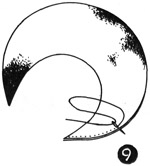

1952—How to Make Hats
by Ruby Carnahan
>Fur Hats
FUR HATS
Fur hats can be made on a buckram frame or combined with felt. If the entire hat is to be made of fur, be sure to choose a small or medium frame. Fur has a tendency to make a hat bulky. If a larger hat is desired, combine fur and felt or velvet, or any other cloth and fur combination. Use only short nap fur. Fluffy furs are desirable only as trimming and even then use sparingly. To look professional, fur hats require time and expert workmanship.
PERSIAN LAMB HAT
Follow directions on page 64 for blocking felt crown. Trace pattern on page 129 for fur brim and fur ornament. Lay pattern on a fold of paper and cut pattern double. Open pattern and lay flat on a piece of elastic net (Illus. 1).
Mark around pattern on net and cut out elastic net on line marked. Slash elastic net every 1/2" around headsize (Illus. 2).
Whip stitch a strong frame wire around edge of elastic net brim and stretch a 1/2" bias strip of crinoline over wire and baste to frame (Illus. 3). (Do not wire frame around headsize.)
MAKING FUR BRIM
(Illus. 4) Dampen pelt side of fur with a sponge and stretch fur as much as possible without tearing pelt. Tack fur down to a board and let fur dry. Pin brim pattern on pelt side of fur on board and draw a line around pattern on pelt.
(Illus. 5) Carefully run a sharp razor blade through pelt on line marked and gently pull fur pieces apart.
MAKING FUR BRIM
 (Illus. 6) Sew silk tape around fur brim edge, using an overcast stitch.
(Illus. 6) Sew silk tape around fur brim edge, using an overcast stitch.
Pin fur brim on top side of frame turning tape over edge of frame and sewing tape to frame (Illus. 7).
Make fur brim facing the same as top brim, binding fur edge with tape. On the facing turn tape under and sew down on pelt. (Illus. 8)
Pin facing of fur to frame and slip stitch fur brim together (Illus. 9) around brim edge.
ASSEMBLING FUR BRIM AND FELT CROWN
(Illus. 10) Mark center of fur brim and center of felt crown. Slip fur brim under felt crown on block and pin crown and brim together. Sew crown and brim together taking small invisible stitches on felt side.
FUR ORNAMENT FOR PERSIAN LAMB HAT
(Illus. 11) Trace ornament pattern and cut out. Lay pattern on sized elastic net and cut out.
Wire entire edge (Illus. 12) and bind edge with crinoline.
(Illus. 13) Use pattern to cut fur, cutting fur in same manner as for brim.
Sew silk tape around edge of fur (Illus. 14).
Sew one side of fur to ornament foundation, sewing tape to foundation (Illus. 15).
Sew tape down on both sides of second piece of fur (Illus. 16) and pin to other side of ornament.
Slip stitch both pieces of fur together all around the edge of ornament. Sew ornament as illustrated 17.